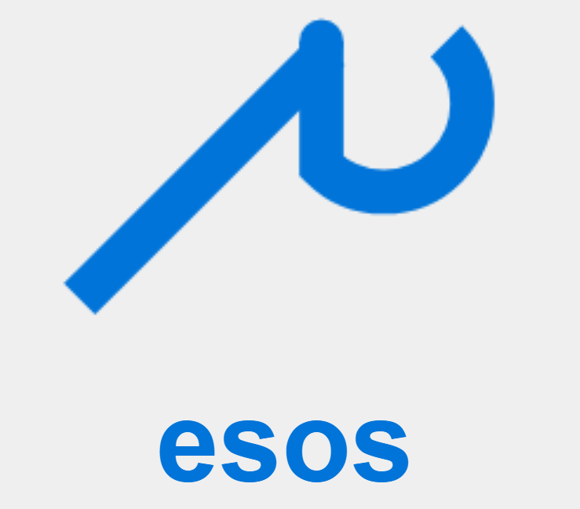
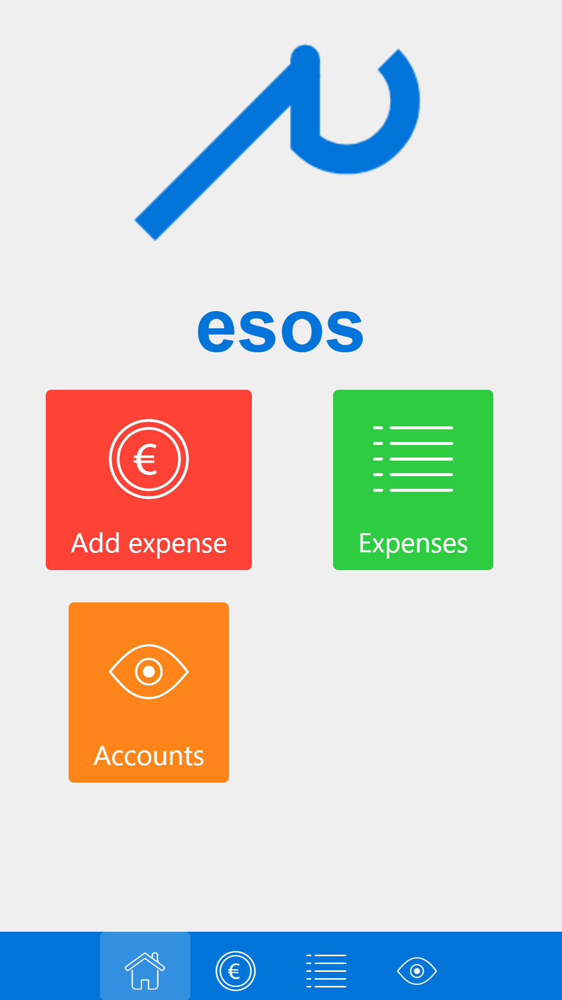
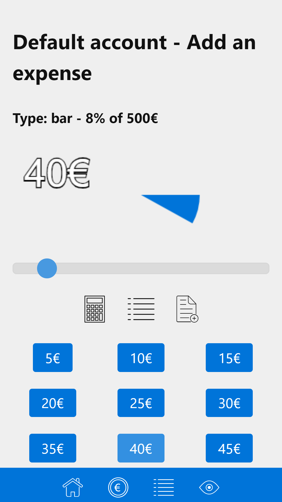
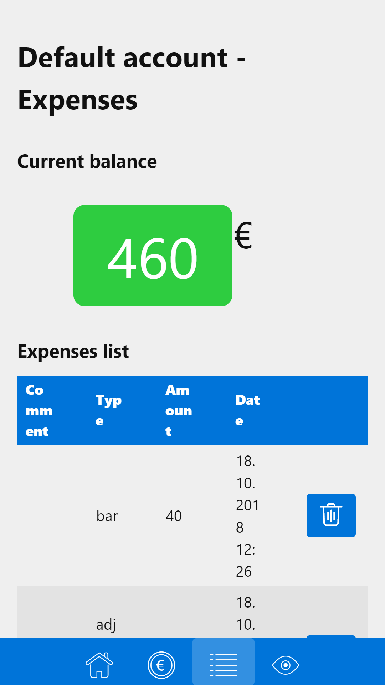
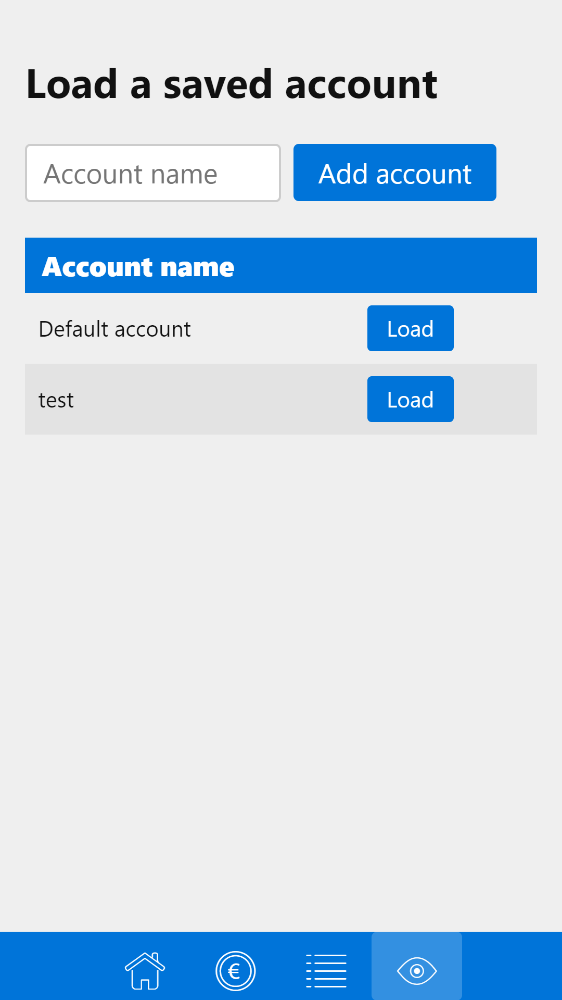
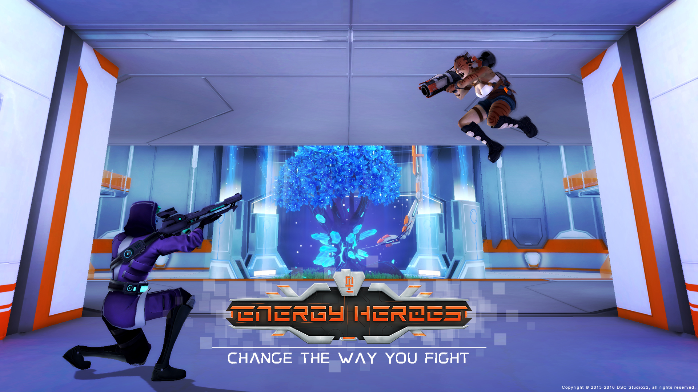

Welcome to my webpage, I am Thomas Gainant. Born and raised in Limoges, near Bordeaux, France, I am currently working as an artificial intelligence software developer for ICS International in our Berlin office, in Germany.
I also worked as a freelance software developer and as a gameplay developer for a few video game studios. I am highly interested in computer programming, game design and software development and am lucky to have made my career out of these interests.
I am also passionate about music and make some on my free time. My tastes range from black metal to classical music, passing through dark electro and EBM.
My various other interests also cover history, ufology, occultism and fathers' rights.
Projects
esos
Expenses & money management app :: 2018
General

esos is a simple app for recording your expenses, listing them and get your current accounts balance. The goal is to record whatever you spend in a few simple clicks, in order to control your expenses.




Goal
The first goal of this project was to actually learn quickly how to deploy a small React front-end-only app into a mobile platform, using the Cordova technology I already used in the past. I then started to develop this project more and more on top of this, having more ideas to fit this need I had to have a very small and straightforward money management app. The goal of this app is not to have a user experience which complies to the most, but rather fits my own personal need.
Tech
esos has been made with React and Redux, using the programming language Javascript (ECMAScript 6/2015). Porting to mobile was made by simply using a webview container with Cordova. Data storage is made using the local storage of this container. Styling is based on the Picnic CSS library. Special visual effects like the pie charts are made using HTML5 Canvas.
"Energy Heroes" was a video game which aimed to mix the complexity and required cleverness in a MOBA game with the tension and simplicity of a Third Person Shooter. To sum up: mixing Gears of War with League of Legends.

Set up in a fictional science fiction world where multiple alien races fight over one of the most precious ressource in the Galaxy: Energium. A company renting the services of hitmen, mercenaries and rogues engineers sends its employees on the battlefield in order to control Energium sources for whoever pays the most.
The gameplay was essentially based on the destruction of buildings defending the base of a team, clearing the path further and further to the final and biggest building of a team, which destruction lead to victory. The characters were unique and had special powers and specific weapons: the player could play a bionic soldier being able to knock his enemies down with his robotic arm, an humanoid brute carrying a huge flamethrower or an alien carrying a gun which can heal its partners, etc., etc.
My role
I started to work for DSC Studio22 as a simple gameplay developer and as the first employee, having to set up the first video game projects of the studio, which were for the most part mobile games. Given my degree in game design and my previous experience in the video game industry, I first did small project management tasks on top of my regular software development duty.
But launching the project "Energy Heroes" was a big challenge for the company and I had to step up my game. I started working more and more on project management tasks, reaching the title of game producer. I had to hire half of the team, which reached fifteen coworkers, created the different teams involved in the project (programming, graphic design, game design, etc.), set up the coordination of those teams and at the same time helped the managers of those teams with game design and gameplay programming.
Tech
The main technology used for creating Energy Heroes was the game engine Unreal in its third professional version. Unreal Engine 3 in its non-UDK version can be programmed using a language which is a bit like C# or Java: Unreal Script. Part of the game, notably level design specific events, were scripted using the Kismet visual scripting feature.
Regarding the graphic design, we used mainly 3DS Max 2015 but the production was also started with Blender and then completed with ZBrush (and then create a retopology of the models in 3DS) and Maya from time to time. Animating the 3D models was made in 3DS first then also Maya. For 2D graphic design like making textures, normal maps or sprites, Photoshop was of course the main software used. The Unreal Engine integrated tool Cascade was also used for 3D FX creation.
The UI was made using the technology Scaleform included in the Unreal engine, which imports Flash files scripted in ActionScript 3 into an object modifiable with Unreal Script and Kismet.
Achievement
Aiming to be a revolution in the MOBA universe, before bigger studios decided to put their tremendous ressources into projects also mixing MOBA and shooter mechanics, Energy Heroes was a really ambitious project, hurling our indie game studio specialised in mobile casual games into the path of creating its first 3d online multiplayer, community based, AAA video game.
Energy Heroes was the biggest project for DSC Studio22 but it was also a commercial failure with the rise of others non-indie projects like Smite, Overwatch or Paragon fitting exactly what our project intended to be before them. To its obvious slow realisation and lack of polishing were added internal problems in the team and a lack of efficient marketing. In the end, this project could not survive in such a competitive environment.
Yet, the game managed to gain a moderate attention and even had the opportunity to get greenlit on Steam. The game never reached further than the alpha status but despite this "early access" state of the project, it was concrete enough to play it in an online multiplayer setup.
Le Bal des Bobards
Satirical puzzle game :: 2016
Satirical 2D browser game created on Unity3d in response to the different 2016-2017 elections in France.
The goal of this game is to convince the biggest number of electors possible. You play as a politician interviewed on an important national political show. Hearing closely what you are about to say, a pool of random electors will decide if they will vote for you or not for the next elections.
The political orientation of those electors is random: blue for right wing, red, for left wing. Black and white represent extreme-left and extreme-right electors. The percentage of these categories is random. They will decide or not if they vote for you as the journalist asks you questions and you answer to them by choosing between a few possible answers.
The message behind this game is of course the absurdity of the profesionalisation of politics, in which politicians tend to tell what the public opinion wants to hear. "Le Bal des Bobards" had a good reception and was published in the popular french weblist "Les Liens Idiots Du Dimanche", resulting in thousands of unique players.
Programming was made in C# using the Unity engine and the graphic design was made in pixel art with Pyxel Edit.
Wacky Docks!
Action mobile game :: 2015
Mobile action game created on Unity3d as a kick start project to my former freelancer business.
The rules of this game is to make the most crates possible disappear. At regular intervals, a shipment of crates is added on the deck of your ship. The more the game goes on, the more these shipments will come quickly, leading to a greater and greater number of crates piling up on the deck. Your role is to touch a crate with your finger to make it disappear. Sometimes, crates with special effect will appear in a shipment, like the blue crates which will be required to have at least three of them aligned on the deck to disappear. The more crates you make disappear, the higher your score.
A simple but addictive idle and action game, mixing Tetris with Fruit Ninja.
This project was used as a showcase of the whole range of skills and services that I used to rent:
Software development: with the whole gameplay and behavior of the game built in C#
Mobile development: with the deployment of the game on the Android platform and its optimization on 3d performance
Web development: with the showcase website and the API used to save the scores and to buy virtual money
Graphic design: with creating basic 3d models and basic UI creation
Programming was made mainly in C#, using the Unity engine. 3d graphic design was made with Blender and 2d design with Photoshop and Illustrator.